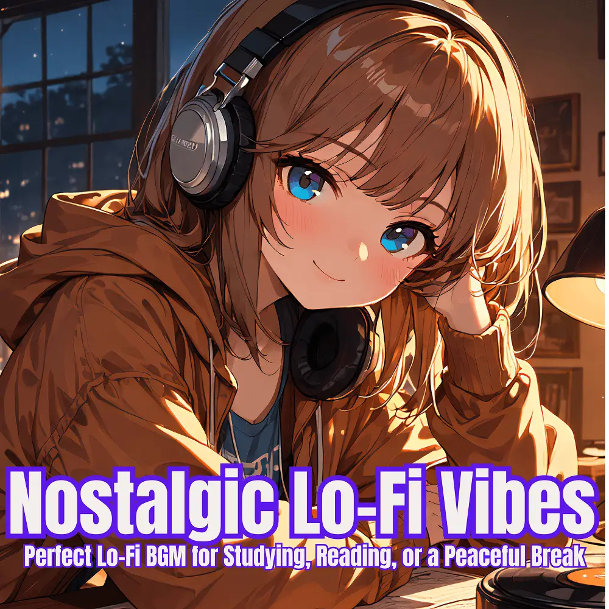

Lo-Fi
Nostalgic Lo-Fi Vibes
Nanashino-chan
Explore Nostalgic Lo-Fi Vibes by Nanashino-chan: 25 instrumental tracks spanning Lo-Fi. Start with Dreamy Beginnings / Gentle Flow, preview the collection and find your favorites on streaming services.
2025-06-10 · Released · 25 tracks · Instrumental
Preview the album
The jacket stays here until you choose a track. Playback uses YouTube.
YOUTUBE PREVIEW
Choose a track to listen
The jacket stays here until you choose a track. Playback uses YouTube.
If playback is unavailable, open the album or track on the streaming service.
Find this album on streaming services
Links marked “search” open search results. Select the album or track on the service.
Track list 25
- 01Dreamy Beginnings
- 02Gentle Flow
- 03Mellow Reflections
- 04Vintage Pulse
- 05Piano Drift
- 06Warm Echoes
- 07Soft Horizon
- 08Echoed Memories
- 09Nostalgic Vibes
- 10Smooth Reverie
- 11Restful Breeze
- 12Quiet Rhythms
- 13Timeless Melodies
- 14Subtle Keys
- 15Lo-Fi Daydream
- 16Calm Essence
- 17Faded Grooves
- 18Vinyl Whispers
- 19Soulful Drift
- 20Hazy Chords
- 21Mellow Reflections II
- 22Warm Soundscapes
- 23Piano Nights
- 24Tranquil Echoes
- 25Chilled Departure
Find a sound for your next post
Copy “Nanashino-chan + track title” and paste it into your social app’s music search. Availability depends on your region and account. Copying the name does not grant usage rights.